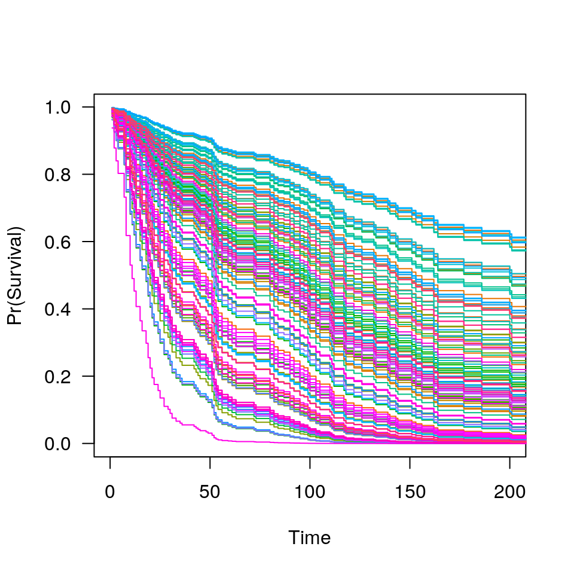

predict-ncvsurv.RdSimilar to other predict methods, this function returns predictions from
a fitted "ncvsurv" object.
# S3 method for ncvsurv predict(object, X, type=c("link", "response", "survival", "median", "coefficients", "vars", "nvars"), lambda, which=1:length(object$lambda), ...)
| object | Fitted |
|---|---|
| X | Matrix of values at which predictions are to be made. Not
used for |
| lambda | Values of the regularization parameter |
| which | Indices of the penalty parameter |
| type | Type of prediction: |
| … | Not used. |
Estimation of baseline survival function conditional on the estimated
values of beta is carried out according to the method described in
Chapter 4.3 of Kalbfleish and Prentice. In particular, it agrees exactly
the results returned by survfit.coxph(..., type='kalbfleisch-prentice')
in the survival package.
The object returned depends on type.
Breheny P and Huang J (2011). Coordinate descent algorithms for nonconvex penalized regression, with applications to biological feature selection. Ann. Appl. Statist., 5: 232-253.
Kalbfleish JD and Prentice RL (2002). The Statistical Analysis of Failure Time Data, 2nd edition. Wiley.
#> trt karno diagtime age prior squamous #> 0.271657331 -0.031750420 0.000000000 -0.004227748 0.000000000 -0.852920353 #> small adeno large #> 0.000000000 0.261188132 -0.466335148#> 1 2 3 4 5 6 #> -2.778003 -3.074368 -2.646943 -2.752636 -3.078596 -1.423431#> 1 2 3 4 5 6 #> 0.06216253 0.04621881 0.07086755 0.06375954 0.04602382 0.24088609#> [1] 0.6599951#> [1] 151#> [,1] [,2] [,3] [,4] [,5] [,6] [,7] [,8] [,9] [,10] #> [1,] 80 80 73 73 73 73 73 73 80 82 #> [2,] 80 82 84 87 90 92 95 95 99 103 #> [3,] 80 80 73 73 73 73 73 73 80 82 #> [4,] 80 80 73 73 73 73 73 73 80 82 #> [5,] 80 82 84 87 90 92 95 95 99 103 #> [6,] 80 54 51 43 33 30 27 25 24 24 #> [7,] 80 61 54 52 51 51 48 45 44 45 #> [8,] 80 87 95 99 103 110 111 117 118 132 #> [9,] 80 72 61 56 54 54 53 52 52 53 #> [10,] 80 82 84 87 90 92 95 95 99 103#> $`0.1000` #> trt karno squamous adeno large #> 1 2 6 8 9 #> #> $`0.0100` #> trt karno age prior squamous adeno large #> 1 2 4 5 6 8 9 #>#> 0.1000 0.0100 #> 5 7